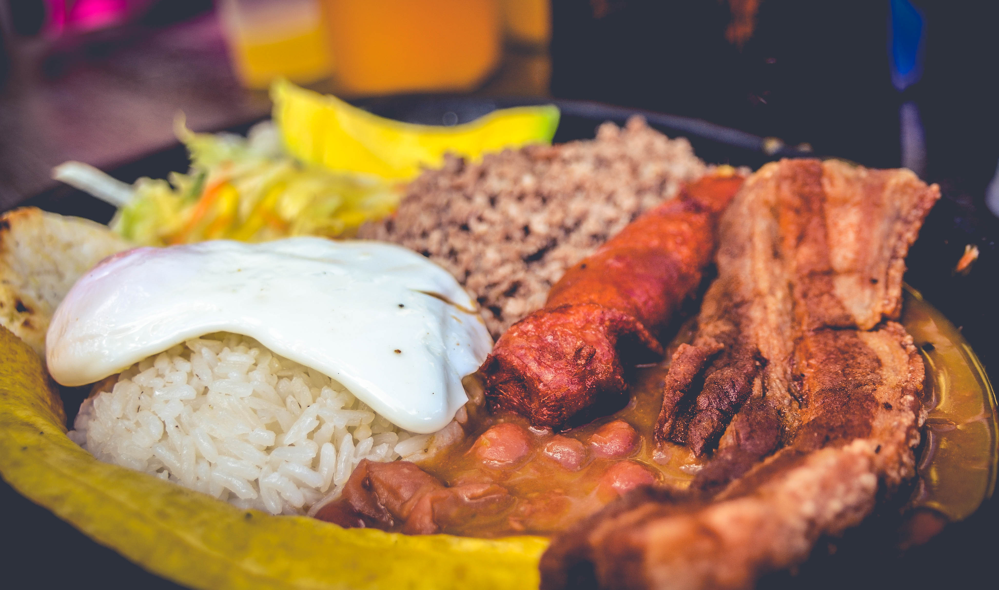

Bandeja paisa. A Colombian dish

Bandeja paisa from Medellin, Colombia.
The traditional Colombian Bandeja Paisa is less a single recipe and more
a hearty assembly of several individual components, each prepared
separately to create a substantial platter.
The preparation involves cooking several items concurrently or even the
day before, starting with slow-simmered red beans often flavored with
pork belly or hocks and a tomato-onion hogao sauce. Concurrently, plain
white rice is cooked, and various meats are prepared: ground beef
(sometimes made into a 'powdered' beef), chorizo sausages, and crispy
fried pork belly (chicharrón) are all seasoned and cooked until tender
or golden brown.
Ingredients:
- Red Beans
- White Rice
- Ground Beef
- Chicharrón
- Chorizo
- Fried Egg
- Plantain
- Arepa
- Avocado
Steps:
- Prepare the soup:
-
Prepare the beans, hogao and powdered beef one day ahead and keep in
the refrigerator..
- Get the chicharrón ready:
-
When you are going to serve the bandeja paisa, heat the beans and
powdered beef and hogao. Make the chicharrones.
- Make the rice:
- Cook the white rice and plantains.
- Fry the eggs and chorizos.
- Serve the bandeja:
-
To serve, place the rice in a tray or platter and place the rest of
the ingredients as you like. I prefer the beans in a separate bowl,
but you can ladle the beans next to the rice if you like.
-
Bring the hogao in a serving dish to the table, so people can place
it on top of the beans if they like..
-
Get the Aguardiente ready to have an awesome Colombian style lunch.
Home